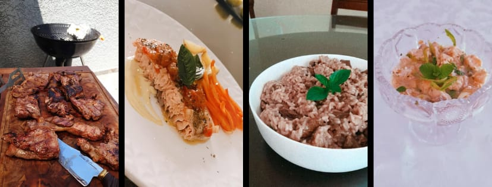
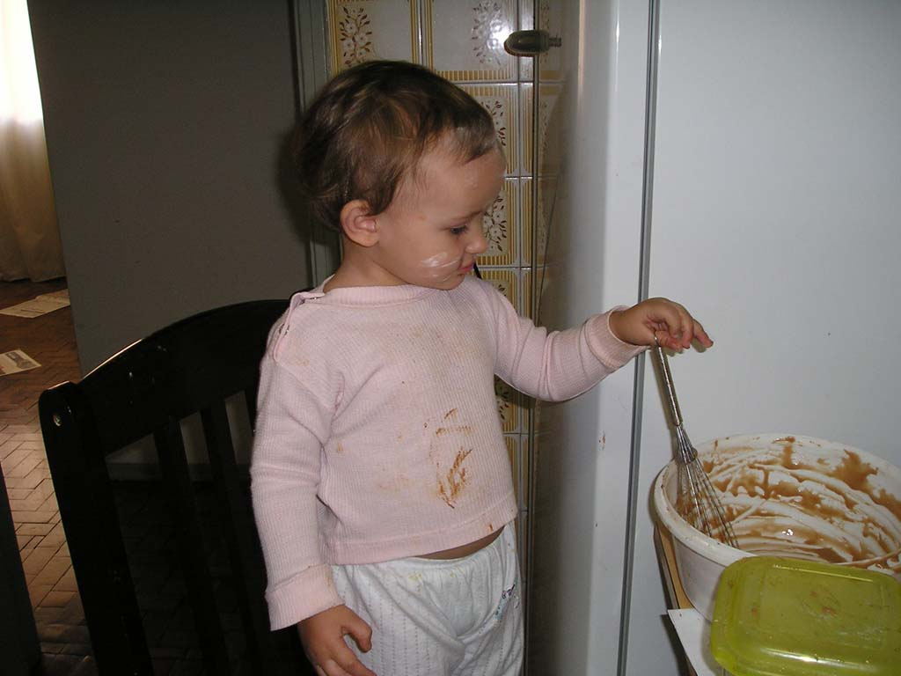
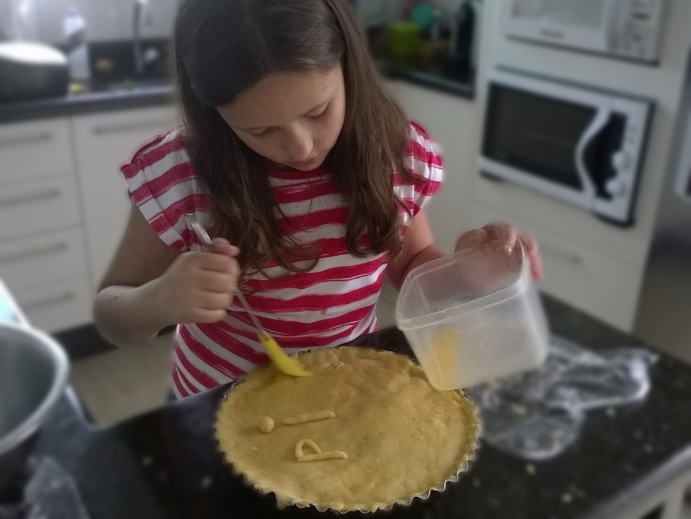

Gastronomia
História: na minha vida
Desde muito pequena eu recebi o incentivo de meus pais para cozinhar, ajudando eles em tudo que fosse possível.
Com oito ano começei minha independencia dentro da cozinha.
Em 2017, fiz um estágio com uma amiga de meus pais que fazia salgados para festas, em Curitiba. Fiz uma vizita a cozinha do Senac e a uma doceira.

2006

2014
 2017
2017
Favoritos
Para cozinhar
- Salgados
- Massas: pães, esfirras, tortas, empadões...
- Carnes: como o principal do prato e churrasco.
- Risotos.
- Quiches.
- Doces
- Tortas: Holandesa, Limão, Requeijão, Banoffe...
- Sorvetes.
- Bolachas.
- Sobremesas.
- Diferentes
- Dificuldades
- Bolos: unico bolo aprovado até hoje é de Cenoura.

Inspiração
Ferran Adrià
- O alquimista da cozinha
- O Pai da Gatronoma Molecular
Breve biografia
- Espanhol, 14 de maio de 1962.
- Foi membro da equipe do capitão-geral da cozinha no Serviço Miliatar na Marinha Espanhola.
- Revolucionou a gastronomia com suas tecnicas, tanto que, para a revista Time americana, ele revolucionara a cozinha do século 21, já na revista Businesse Week foi incluído entre os 50 líderes das grandes mudanças na Europa no século passado.
- Trabalha com uma equipe de químicos, responsáveis por descobrirem o ponto ideal de precipitação de proteínas, de emulsificação de amidos... alterando a textura, a cor e a aparência do alimento, sem modificar seu sabor.
- É dono de um restaurando com 3 estrelas Michellin, ElBulli. Este se encontra fechado, porém mantem-se o laboratório.

Porque a gastronomia é tão bela na minha vida
A gostronomia é única e mostra a capacidade que, o alimento preparado, tem de fazer florecer nas pessoas sentimentos e memórias guardadas. Gerar um turbilão de sensações de uma maneira simples. Mas acima de tudo, é uma maneira singela de fazer o próximo feliz, de demonstrar carinho, cuidado e amor.